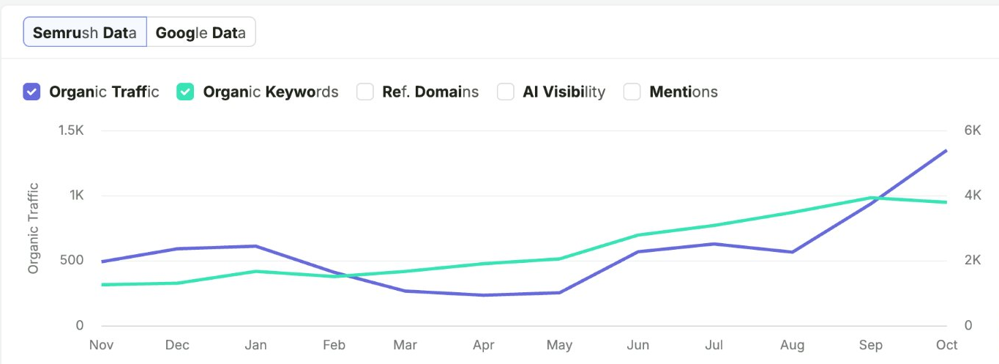
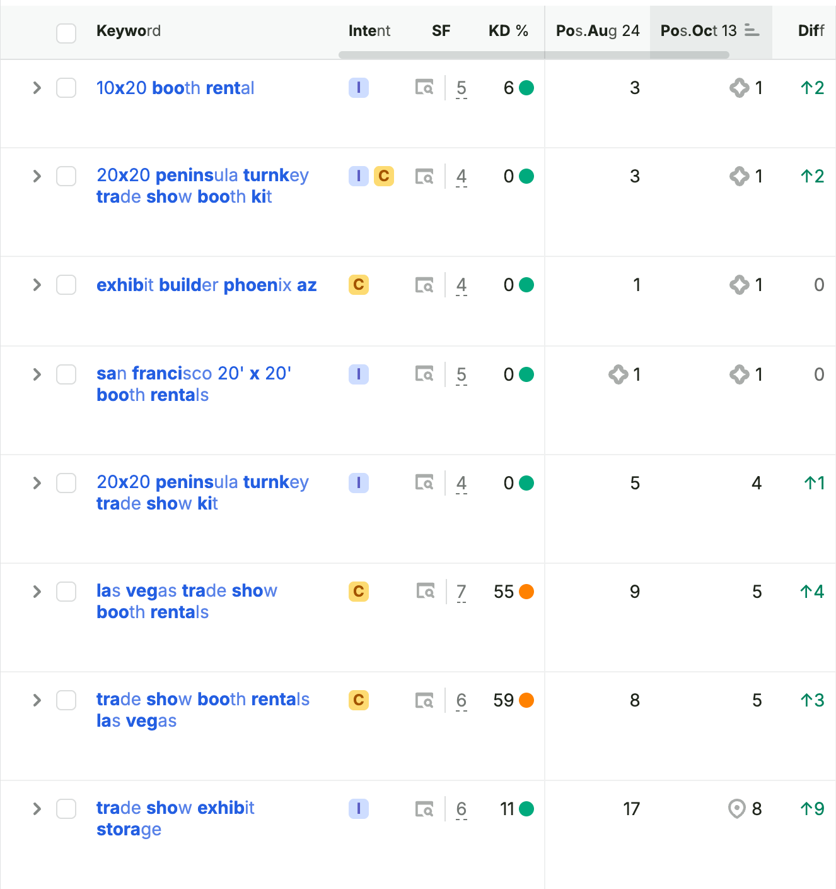

1,268 booth designs, one marketer, and a catalogue Google can find.
A US trade-show booth rental company adds new booth designs in batches. I uploaded almost all of them, and built a process that keeps every page clean.
Every design is a page. Every page had small mistakes.
New booth designs arrive in sets from two design teams. Each one needs 6–8 images in a fixed angle order, a web code, an SEO title, a meta description and ALT text, and all of it has to match a master sheet.
Done by hand, small mistakes crept in: images in the wrong order, duplicate titles, descriptions that were too long. Across hundreds of pages, they add up.
A process that doesn't depend on how tired I am.
- A step-by-step pipelineCollect renders → angle order → compress to WebP → write the SEO copy → upload → check every live page against the master sheet.
- Written SEO rulesI turned the owner's review notes into a 25-rule content guide, so later batches passed review faster.
- Reusable AI skillsI wrote the process down as custom Claude skills, so every set follows the same standard.
- Dashboards for every batchStages, live progress and every web code in one place, so nothing gets skipped or doubled.
- A site-wide auditCrawled the live pages, found duplicate titles and descriptions over 160 characters, and fixed about 700 of them.

The catalogue grew, and so did search.

- 90% of the catalogue uploaded by me, 1,268 of 1,409 pages
- 690+ pages since July 2025, from both design teams
- 3,500+ keywords, with traffic climbing from mid-2026
- #1 on Google US for four booth keywords, like "10x20 booth rental"
- Two Las Vegas keywords went from #8–9 to #5 in seven weeks

Repeatable beats clever.
The biggest win wasn't one trick. It was making the work repeatable. Once the process lived in written rules and tools, quality stopped depending on my mood, and each batch was faster than the last.
Not every keyword went up. Some Las Vegas pages lost positions in the same period, and finding out why is my next piece of work here.
- WordPress
- RankMath
- Search Console
- GA4
- Semrush
- Ahrefs
- ShortPixel
- Claude
- Google Sheets
- HTML